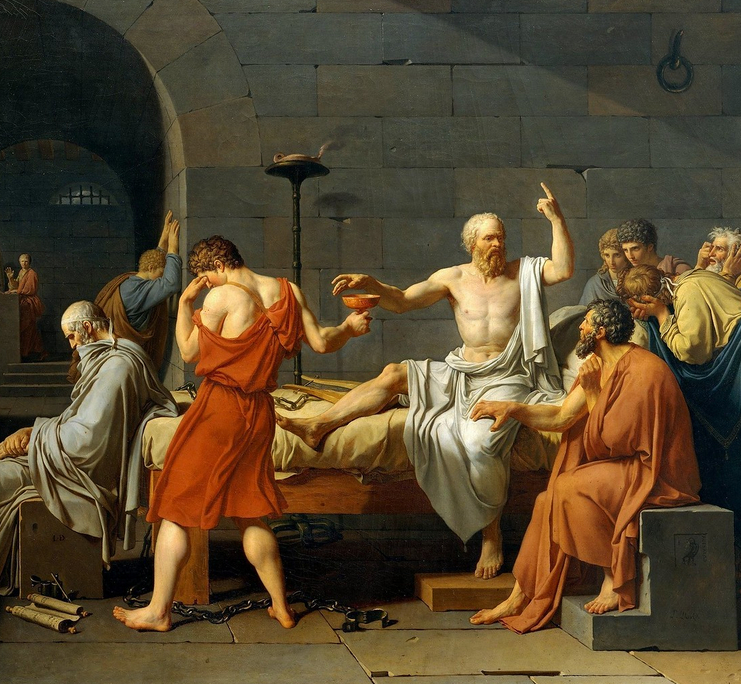

May 5th 2020, 9:47:17 pm EDT
Listen
While not everything can be planned,
authenticity and learning go hand in hand.
Some lessons can get pretty tough,
but will fix us, sure enough.
When life gets sad or feels no good,
it may be something you misunderstood.
And our views will shift,
and we'll convert that bad into a gift.
Pretenders, can't learn this way,
always in the dark, be it night or day.
They walk an alien path,
darkness and wrath.
There is nothing there to fix,
it's all an incomprehensible mix.
To live on a spectrum opposite of devious,
makes each day connect with the previous,
And as days add up, they make you stronger,
and your steps travel even longer.
Each day turns into gifts and rewards,
you stop being played, and create your own chords.
Authenticity is a superpower,
it will help you rise, and you'll never cower.
Day after day you become more powerful,
this is how we become truly beautiful.
It will help you finish what you start,
and your life, will become, a work of art.
May 4th 2020, 10:52:08 pm EDT

Listen
Every way of thinking about the world,
brings us closer together, despite, what we are told.
There is just one little thing to keep in mind,
we have to leave all the bad ideas, behind.
Exchange of ideas came a long way,
but we still need to eliminate foul play.
Because not everyone is educated,
and without wisdom life gets complicated.
Misinformed people are easily swayed,
they are often unprepared, and very scared.
If we build to remove their fears,
they will love us... to tears.
The most powerful early-tool is the Audiobook,
wisdom delivered in a way that's hard to overlook.
It is private, and comes with no shame,
it can take a person from poverty to Hall of Fame.
And the best type of things to listen to,
are memoirs or lectures, that enlarge a world view.
We must stop bad education from tearing us apart,
we each have to learn, and become smart.
This day of Wisdom, and Peace that we yearn,
comes closer each day that we learn.
(image courtesy of Opte Project)
May 3rd 2020, 10:34:27 pm EDT

Listen
Bicycling some years ago, out thirty miles away,
along a road, and an ancient highway.
I found an overpass where I could perch upon,
and I discovered I wasn't really alone.
I figured it was the a huge love story,
about a boy named Harold and a girl named Wally.
She was a Book Worm, a Hero, and a Graffiti Artist,
and Harold loved her because she was the Smartest!
Wally fell in love with Harold,
as she knew he was a Poet with a Heart of Gold.
In 1980 some 40 years ago,
the two adventurers gave it ago.
They set off for Center State,
and that became their Longest Date!
It all their walking, it never rained,
and it never too sunny, neither complained.
They waked holding hands together for a hundred miles,
their adventure was amazing, nothing but smiles.
When they finally arrived at Mount Pleasant,
Harold quietly gave Wally her present.
It was a little book of foolish rhyme,
that Harold wrote over a long stretch of time.
They both just happily turned 57,
their life together is pure Heaven.
Both are super smart, extremely young, and very strong,
their sweet love for each other, is lifelong.
They still do their Mount Pleasant walk,
holding hands for days, sleeping-in until nine o'clock.
Harold makes really, really good Vegan Lettuce Wraps,
and Wally is a master at reading Maps.
They've been to all kinds of interesting places,
and they always arrive with beaming and smiling faces.
Here is where I took the photo few years ago,
just in case any of you guys want to go.
May 2nd 2020, 10:15:24 pm EDT

Listen
There is a very special group of people, that many have forgotten,
our Intellectual Foremothers and Forefathers.
They brings us gifts wrapped in the primitive art of writing text, on paper.
It is frequently all they had, it was the only way to reach us.
They are brilliant, and healthy, and unbroken, and triumphant,
they are full of light, more than history will ever tell us.
Nobody who outlives an empire, will have their history shown for the lovely thing it was.
This served to protect them, and it failed to erase them.
We must never allow ourselves to merely listen to history,
because those are always writ by prevalent powers, it was their job to erase them.
More modern Philosophers had the same problem,
Our friend, Dear Friedrich, and what a Warrior...
Was smeared by the Nazis, he was so powerful, that everyone wanted a piece of his might.
Friedrich Nietzsche hated what Nazis stood for.
Recently, one of the Great Modern Philosophers was under attack, it deeply hurt and frightened her,
but her classrooms rose for her with noting but love and continued admiration.
We are tasked with bringing the light of our hearts, and resurrecting those who passed,
not by merely understanding their books, but by understanding what they were trying to say.
And it is OK, to understand them in our own way at first,
it takes time, to befriend someone, from a book, across time.
Yes, all we have to go on, is text on paper.
But we know they were just like us, they were All Too Human, friendly, and of good cheer.
If they made mistakes, these Great Beings were not stained for long,
they rose, and they took their miserable failures, to create gifts of prevention for us.
These gifts are complex, they are as complex and nuanced as You and I.
It takes hard work to inherit gifts this powerful.
The only way to unwrap those Gifts of Wisdom is with Admiration, Friendship and Love,
schools teach us to see Great Beings as these synthetic monoliths of concrete.
But nothing could be further from the truth, because all these Great Beings,
they were once kids, and teenagers, they had heartaches, dreams and hopes.
They were just like you and I, but they invented ideas that they cared to share,
and they rose to the challenges of leadership to preserve them.
Those ideas are our intellectual inheritance,
here is my attempt to name a few for your pleasure.
May 1st 2020, 9:08:47 pm EDT

Listen
If you want change, you can't continue doing the same things you've always done.
If you really want change, then you are going to have to alter your course, now.
If you don't fight back, you will always lose,
and if you stay in the dark, you will only add to the darkness.
There cannot be a compromise between good and evil,
a compromise only takes from the good, and only give s to the evil.
Your office window, is not a substitute for a Call to the Wild,
Your next promotion does not actually make you a greater person.
A vacation, cannot set you free, it is not a substitute for nature.
Dressing beautifully, has never made a person truly beautiful.
Waiting for that perfect someone, will not help them notice you.
Trusting that someone else will help you, is just another delay.
And just getting out there, is not enough to be understood.
And going out, following friends, can only put you on somebody else's path.
Life is not hard, it only gets complicated when you follow,
because by following you just end up in places you don't understand.
You must lead. And you must keep walking forward. Your own step, after your own step.
In your own direction, towards the things that move you, only then can You be Trully Moved.
It must the correct combination of books, poems, steps, events, summers, and epochs.
Do not try to hurry, do not change roads, only move up, only think, and envision, and grow.
That which leads to Your Greatness, to Your Freedom, to Your Nature, requires, Truth.
Walk your own path at your own pace. Only the correct key, can set your mind free.
The others who seem to have it all right.
Often get lost on alien paths, and merely put on a happy face.
While it seems like you are trapped today, you are not, it is just an illusion.
Look towards the car keys.
That is all it will take. Grab the keys and go.
It will be very difficult at first.
The toxic build up that is keeping you from getting up, right now,
takes three days to crumble. It is a heavy cage.
But there is a way.
A simple way.
Grab the keys, and go... i275 south, merge onto 75 south,
and take it all the way down... Florida Keys, US Highway One.
If you live in Florida, then you are headed for Michigan's Upper Peninsula.
If you live West, your destination is all the way East.
It is not the destination, it is the Journey, my Friend.
Take your time, watch the cage crumble and fade as you go.
Only the important things, will stay.
And you'll get to see yourself again.
And you'll get to be free again,
you will resume where you left of.
A life of bondage,
is not worthy of you.
Life is not meant to be a cage, or cruel, or frighten you.
You knew this as a child, and you let that slip away, not even noticing when it went.
It is your Right to resist being pushed into places that you don't want to be in.
It is your Right to reject conditions that you never agreed to, that you were pushed into.
How else can the Universe be worthy of us, how else can our lives be beautiful.
Heaven and Paradise are real, but they are now, right now. Now.
How can people love you, when your own love for yourself is slipping away.
You have to. You have to accept the responsibility for your Health, and Dignity.
You don't have to make it all the way, the first time,
and you don't have to leave your phone behind.
You can call this therapy, or a vision quest, you can call it a road trip.
You are not allowed to live in a cage, of whatever constitution, that will make you ill.
It comes to you naturally to take care of your body,
but your mind also requires care.
When you reach your Freedom, you'll know what to do next,
it can be another trip, East, or West.
If you feel trapped, the Universe is darker for it.
Take a week. Or two. Forty days is best. call it your Quarantine.
Unless you clear you mind, and focus on what is important,
on you and those worthy of your care, you will lose it.
You will forget the beautiful person you truly are,
you will fall from heaven, and forget about paradise.
And life will turn into a black and white TV show.
You must take good care of your mind.
If there is no one else that cares about you,
then look at this poem.
I care.
Hi!
I am, speaking for you!
grab the keys, or bicycle, or comfy shoes, and go.
Go, and never again, let go.
Your health is important.
Your well being is important.
A Human Being is Meant to Learn,
A Human Being is Meant to Rise.
You are meant to filled with Wisdom,
with Joy and Love of Life.
You are meant to Laugh,
Truly Fully Laugh.
Listen to me, there is more.
You Are Meant To Become A Great Being.
April 30th 2020, 8:39:24 pm EDT
Listen
from The Warrior Book
A Warrior is She that thrives and triumphs where’er She be.
You cannot be broken, you must use your misfortune to light your way.
You can learn anything you want, there are no smarter.
They are just actors, with a handful of fragile lessons, crafted to impress.
There is nothing that can break you, there are no stronger.
Look to the source of the pain, it comes from Innocence.
Nothing rooted in Innocence is ugly, all lessons that come from being tricked,
add up to make you more beautiful, enable your insight and foresight, and fuel your authenticity.
When the regrets come at night, that's just you brain asking you,
to think harder, to comprehend your beauty in full,
No one can trick you, not for long enough. So, don't be scared.
Memoirs, Audio-books, Lectures will show you how many better people there are.
We all have to Enlarge our Worlds daily.
Audiobooks, and Lectures, will show you that all you have met thus far were just the same type of person.
Do not be afraid to rise.
The people, or person you have long though about, exist.
But before they can see you, you have to rise, and shine, and be seen.
Don't be scared.
Those who will use your Love, Innocence, Endurance and Generosity against you,
have long been lost, they are blinded, and fractured, and damaged, and broken.
They hold no power over you.
If their attacks continue they will grind themselves to dust,
and all the experiences that will be left in their wake, will make you stronger and better.
Battles make you stronger, smarter, more beautiful.
You are a Warrior, that's the oldest name for it.
A Warrior is She that uses the harm that came her way as energy,
who understands none can stay a child and all must grow, and enlarge their worlds.
A Warrior can never be damaged, or hurt -- a Warrior Learns.
A Warrior resists tears in the rain, just like she can resist weakness.
We live in a fragile world, full of fragile people, with fragile egos,
they speak fragile advice, with fragile words; from their fragile hills.
A Warrior does not wait to be taught.
A Warrior learns fastest on her own.
Learn in the sequence that fits you best,
learn at the pace that helps you most.
Push the dark imaginings back,
and rise.
Move your hand.
And push up.
And stand up.
Get ready to walk,
and then run, day, after day, slightly longer.
And then lift your weights, the way you learned to run,
and then lift for longer, and never rest.
And then, with your sweetest audio-book.
Step.
Step Up.
Rise Up.
To No End.
This is The Life Of A Warrior.
Nothing Can Crush You,
Nothing Can Hold You.
Don't You See?
Everything Makes You Stronger,
Everything Makes You Fight Longer.
You,
Are A Warrior.
April 29th 2020, 8:57:01 pm EDT

Listen
Somehow, Wednesday turned out to be the tiniest day.
I was quiet all day, slowly programming away.
I've been thinking about my bicycle, birds, and rain,
but mostly working on my new website domain.
My bicycle trails have been calling me all week,
I prepared my bicycle and am I ready, so to speak.
There was much rain today,
it will take a few more days, before I pedal away.
It is not always about the adventure,
I love how all the spring trees smell.
How the birds sing in the morning,
how the air is crisp and new.
I never set a plan as to how far I will ride,
I just get on the bicycle and enjoy the outside.
Every once in a while I perch upon an overpass,
scribble code, or just watch the cars sometimes.
There are many memorable places along the way,
they are all very tiny and hidden away.
Old graffiti, sculptures and parks, abandoned railway,
I could talk about them all day.